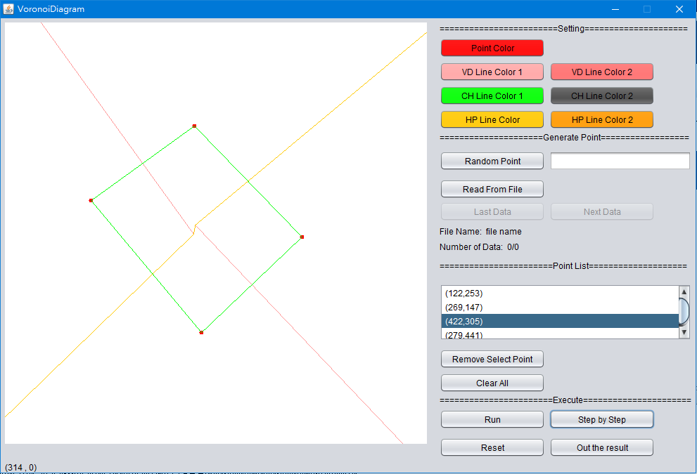

軟體規格
輸入與輸出
輸入
- 滑鼠可在畫布上自由點選，並按「Run」執行程式，顯示運算結果。
- 從檔案輸入，格式範例可參考同資料夾的「vd_testdata_pure.in」。第一個數字為n。n為自然數或0，表示此組測驗中會有n個點的輸入，n之下會有n行資料，每行中有每個點的x, y座標，x與y都在0～600的範圍內。若n為0時，則表示此讀檔結束。
- 可從Generate Point -> Random Point按鈕旁輸入數量n，點擊按鈕後就可產生隨機n點
輸出
- 輸出檔包含輸入點的座標，與執行結果的所有線段。若線段超出畫布邊界，則只計算到畫布的邊界。
- 輸出檔案格式如「out.txt」。
輸入的座標點：P x y // 每個點佔一行，兩整數 x, y 為座標。
線段：E x1 y1 x2 y2 // (x1, y1) 為起點，(x2, y2) 為終點，其中 x1≦x2 或 x1=x2, y1≦y2
座標點排列在前半段，線段排列在後半段。座標點以 lexical order順序排列（即先排序第一維座標，若相同，則再排序第二維座標；線段亦以 lexical order順序排列
介面規格與功能規格

介面規格
畫布
- 大小 600*600
- 滑鼠可在畫布上自由點選，點擊後，點的座標資訊會加入右方Point List 白色方框中
- 畫布下方顯示目前座標
Setting
- Point Color: 設定點顏色
- VD Line Color1: 設定Divide and Conquer後，左邊Voronoi Diagram顏色
- VD Line Color2: 設定Divide and Conquer後，右邊Voronoi Diagram顏色
- CH Line Color1: 設定Divide and Conquer後，左邊Convex Hull顏色
- CH Line Color2: 設定Divide and Conquer後，右邊Convex Hull顏色
- HP Line Color2: 設定Divide and Conquer後，右邊Hyper Plane顏色
- HP Line Color2: 設定Divide and Conquer後，右邊Hyper Plane顏色
Generate Point
- Random Point: 在左邊輸入數量，可產生相對應數量的點在畫布上
- Read From File: 點擊之後，會跳出選擇檔案視窗，選擇測資檔案即可輸入檔案測資
- Last/Next Data: 可選擇從檔案輸入測資，如測資有數筆，則可前後選擇，相對應檔案名稱與目前在第幾筆測資與總共幾筆測資會顯示在下方
Point List
- 白色方框: 會顯示目前畫布上所有點的位置
- Remove Select Point: 可從白色方框選取點，在點擊此按鈕，則可將此點做刪除動作
- Clear All: 在點擊此按鈕，可將所有畫布做清除
Excute
- Run: 直接執行此程式
- Step by Step: 逐一執行每個步驟
- Out the result: 將結果輸出為檔案
功能規格
資料輸入
- 利用滑鼠在畫布點擊
- 可從檔案輸入
- 隨機產生N個點(數量N可由使用者決定)
- 可刪除單一資料點
軟體測試規劃書
- 將使用"vd_testdata.in"進行測試
- 測試讀檔是否支援有註解之檔案
- 將測試檔案依照點數多寡做測試區
- 加入一些特殊測資(如不同斜率的共線，交點在邊界外)
- 交點座標可能計算後為浮點數，如何判斷是否為同一交點須審慎思考
- 變數資料是否都進行清空，如未清空可能導致下次產生錯誤結果